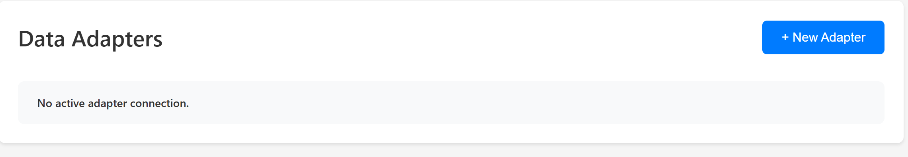
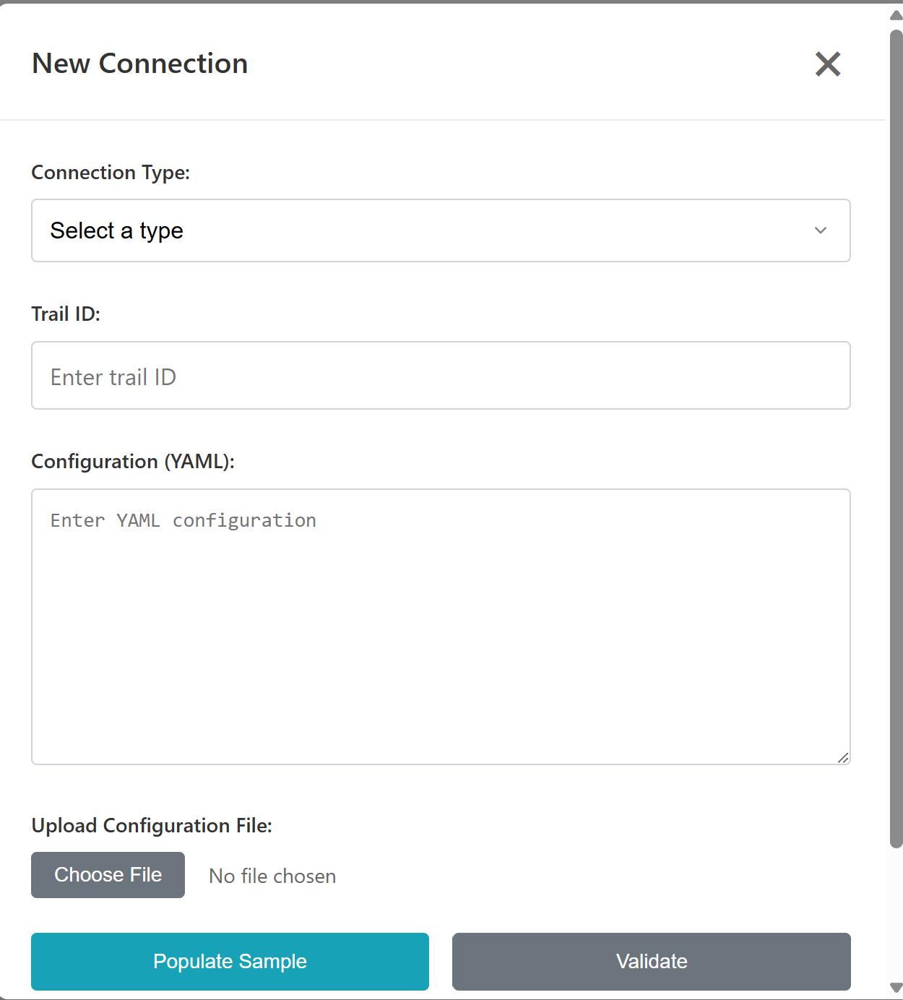

User Instructions
Adapter UI Installation Instructions
Streaming Data
The data adapter library will live in C:/repos/mfi-ddb_library.
There will be a README file with the version that is currently on the computer if there are any issues.
Creating a New Connection
There are two options for creating a new connection:
1. Webpage
It will direct you to the landing page, where you will see a button called New Adapter.

Clicking that will bring up the following pop-up window which lets you configure your connection:
Adapter Type: Choose from a list of supported adapters.
Topic Type: Select the topic of the data stream.
YAML Configuration: Either edit the prefilled YAML in the textbox or upload your own YAML file.

The text will be validated for correct characters and formatting. The Submit button will only be enabled when the configuration is valid.
Once submitted, the system will:
Run validation tests,
Start the data connection.
If everything is working and the data is streaming, the indicator will turn green.
2. CMD Line
(To be completed - please provide more details if you’d like me to expand this section.)